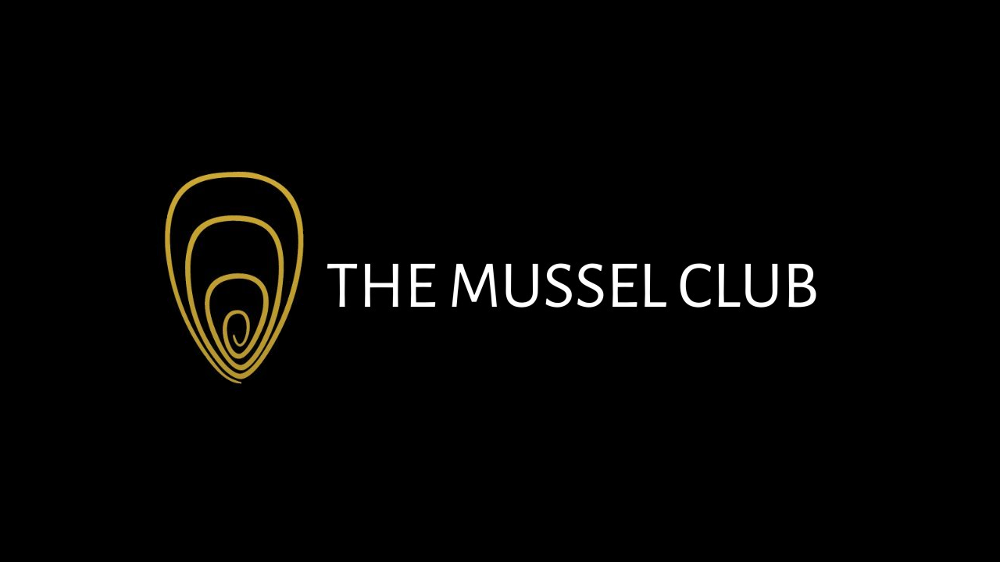

The Mussel Club
The Mussel Club is one of the largest networking communities in in the North East of England that hosts various events in different venues around the North East of England. It was thanks to me speaking to some people at another networking event, Silicon Mingle, that I heard about The Mussel Club. Once I heard about it, I wanted to make sure I could get along to one of their events when I could, this turned out to be today when I attended my very first event for The Mussel Club.
The Mussel Club has been around since 2006 and provides evens to help businesses create working relationships that last between them, it was originally a chance to talk, drink and eat Mussels which was where the name comes from, but today it is a thriving and growing event to help any business here in the North East talk to other businesses and potentially work with each other help people more aware other businesses they may be able to work with in the future or know someone who could work with them by going along an event for The Mussel Club.
The Mussel Club allowed me to speak to people from all sorts of businesses from marketing to managed IT support for small businesses as well as those running a long-established charity, helping people with their social media, mentoring people to help them achieve success, insurance brokers to help you get the coverage you need as a business, helping with websites or branding and so much more besides. It was also a chance to talk about our business, Cluarantonn, which aims to help new and existing podcasters as well as connecting them to small businesses and freelancers. There were people considering starting their podcast or knew people who wanted to get into podcasting as well as those who offered products and services that would help podcasters, which would be of interest to some of those there at the event for The Mussel Club.
The Mussel Group has been holding many events over the years but was great to finally go along to my very first one myself, it was a great way to speak to people I'd probably not have had the opportunity to have spoken to and look forward to catching up with again at future events or work together in the future. It was also great to hear about other events from those there, which will be a great opportunity to go along to similar events in the future. It was great for people to come up and say hello and talk about what they did with many being we would like to work with in our business or I was interested in what they were doing. If you're interested in making new connections as a business here in the North East of England then I recommend you sign up and go along to the next available event for The Mussel Club.